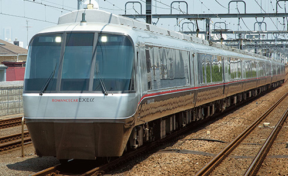
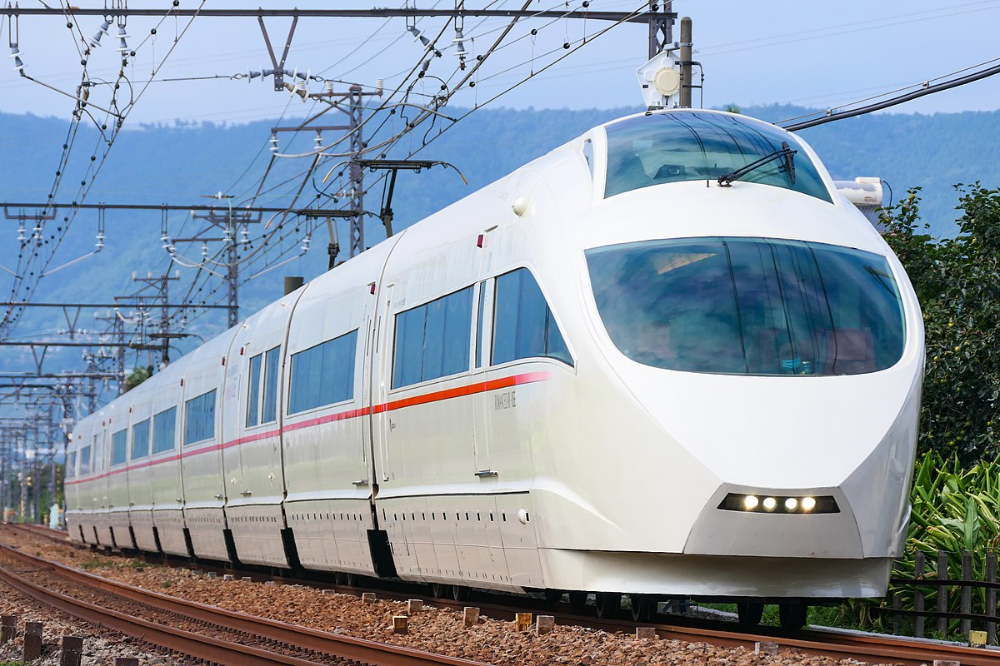
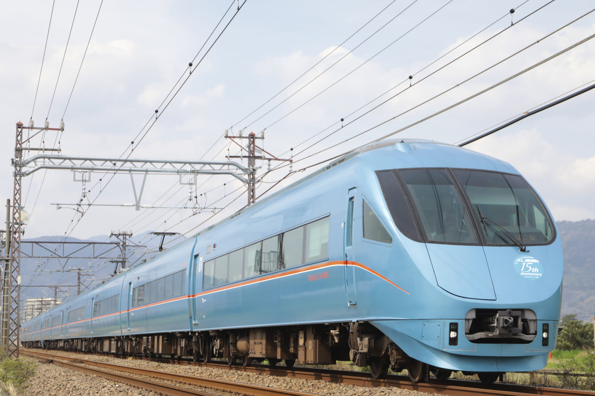

現役ロマンスカー
次に、現役で活躍中のロマンスカーたちを紹介！
|

EXE,EXEα写真はEXEα。EXEは、シャンパンゴールドのような色合いで、どちらとも働き者。小さめのガラスとラインが可愛い。 |

VSE実は去年に引退したロマンスカーだが、私の心の中ではまだ現役なのでこちらに。乗り心地もデザインも抜群だったので未だにロス。 |

MSE青い車体にオレンジラインが際立つMSEは見るとラッキーになると我が家では言われている。GSEと並列すると圧巻のかっこよさ。 |

GSE現役ロマンスカーの中で最推しのGSEは位置枚ガラスとオレンジのコントラストが美しすぎる。展望席からの眺めも最高だった！ |